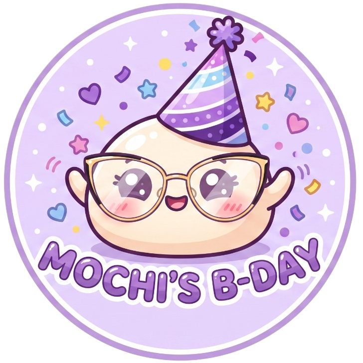
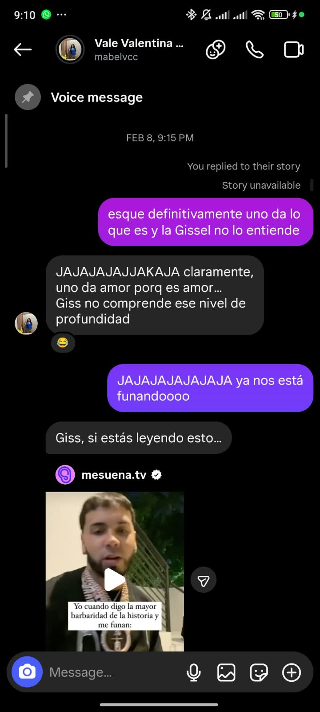
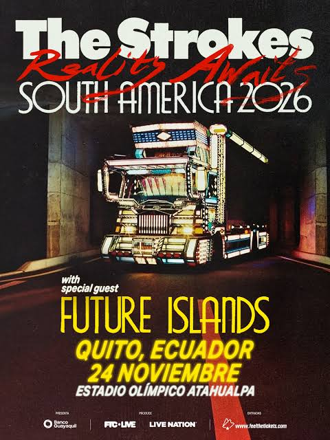

Hola Mabel, Seunhee, Mochi, Valentina, Lokita que atiende en Carter's... En este poco tiempo de conocernos te he conocido por muchos nombres diferentes, pero todos esos llevan a una sola cosa: a ti. No importa en qué presentación vengas JAJA, al final siempre se llega a ti.
Empecemos el primer día con la primera temática: El comienzo de todo. Nuestra amistad no empezó de una manera común, lo cual aprecio porque ninguno de nosotros es una persona común. Todo empezó por un follow, después un mensaje y una historia; esos fueron los ingredientes necesarios para formar esta amistad. La verdad, siéndote sincero, eres muy diferente a lo que pensé cuando te conocí. Aunque creo que "diferente" no es la palabra correcta, más bien yo diría que... eres mucho mejor de lo que pensé o siquiera llegué a imaginar cuando aún éramos completos desconocidos. Descubrir tantas cosas que tenemos en común y el hecho de poder confiar tanto en el otro es lo que hace especial el poder conocerte un poquito más a fondo.

Vamos con una confesión: al principio no tenía ni la mínima esperanza de que pudiéramos establecer cualquier tipo de conversación. Me dabas unas vibes de persona súper seria, pero waos, nada que ver JAJAJA. O sea, no te digo que no seas una persona seria, pero sí que no eres nada grosera ni nada por el estilo. Como que el tener gustos en común nos ayudó JAJA, hacer conversa sobre Giss o el K-pop ayudó a poder fluir.
Creo que lo que más me llamó la atención de ti fue descubrir lo genuina que eres; que tal vez con un poco de miedo, pero siempre eres tú misma. Aunque a veces te sientas presa de la sociedad, siempre eres tú.
Agradezco esa primera interacción hace meses que es la que hoy nos permite estar celebrando estos momentos contigo. Espero estar presente en muchos de los que vienen por delante, así como que tú estés en los míos. Y, de cierta manera, también agradezco que me hayas enviado ese concierto de The Strokes, porque ahora fuiste tú la que dio ese pasito extra cuando más distanciados estuvimos. Sé que hemos pasado por diversas situaciones, pero espero que todo lo que vivimos juntos nos sirva para reforzar el lindo vínculo que tenemos.

Espero que este mensajito alegre tu día, y que los que vienen lo hagan igual o de mejor manera. Quería empezar tu regalito con el inicio de todo, no sé si me fui por las ramas o fui certero, pero lo importante es que todo lo que está escrito salió y fluyó directamente de ese espacio que tienes reservado. Eres una muy linda amistad y espero que todo este mes te vaya de maravilla, que el mundo te sonría e incluso en los días difíciles puedas sonreír un poquito.
¡Es todo por hoy, vuelve mañanaaaaaaaaaaaaaa! 💜